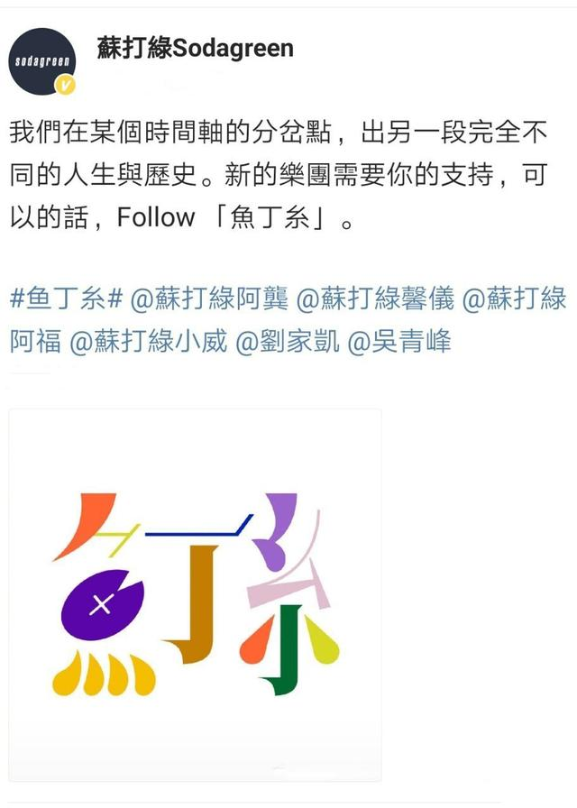

苏打绿（Sodagreen），中国台湾乐团，由以下6位成员组成。
| 年份 | 专辑名 |
|---|---|
| 2004 | 空气中的视听与幻觉 |
| 2005 | 苏打绿 同名专辑 |
| 2006 | 小宇宙 |
| 2007 | 无与伦比的美丽 |
| 2009 | 春·日光 |
| 2009 | 夏/狂热 |
| 2011 | 你在烦恼什么 |
| 2013 | 秋：故事 |
| 2016 | 冬 未了 |
2016年，在金曲奖横扫5项大奖、且即将展开3个月“印夏天”巡演的苏打绿，却在会后的庆功宴上放出爆炸信息：老板林暐哲称苏打绿将休团三年。
2018年12月31日，吴青峰在微博发布和林暐哲的联合声明，宣布和老板林暐哲及其所属的音乐社合约到期，未来将独自处理工作事务，双方的合作正式结束。
这场“和平分手”，却在五个月后突然反转——2019年4月，林暐哲突然称吴青峰未于系争合约期限届满三个月前反对续约。11月，林暐哲再次指控吴青峰违反《著作权法》，表示未经他的同意，吴青峰就不能唱自己创作、包括《小情歌》等逾270首的歌。
2020年2月24日，吴青峰当前所属的经纪公司环球音乐则发表公开声明：自2020年1月1日后，吴青峰及苏打绿可以自由演唱他们所创作的歌曲。
但为了摆脱版权问题，吴青峰等人壮士断腕般地舍弃了“苏打绿”这块金字招牌，同时为了防止意外，所有成员更改艺名，从此以后天高任鸟飞，再不受任何人的约束，能够自由地创作演唱属于自己的歌曲，
2020年7月3日，苏打绿团队宣布正式宣布改名为“鱼丁糸”，新团名拆解自苏打绿繁体字“蘇打綠”的一部分，并发布了休团三年后出的第一支单曲《Tomorrow will be fine》。
